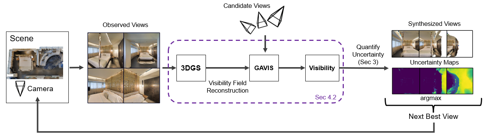
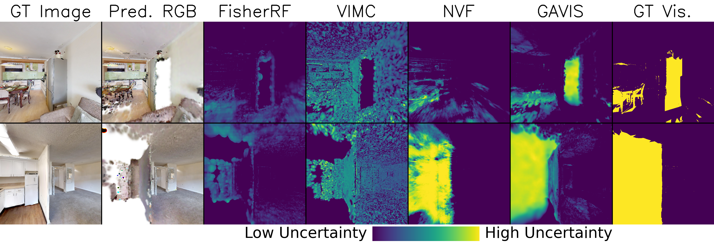
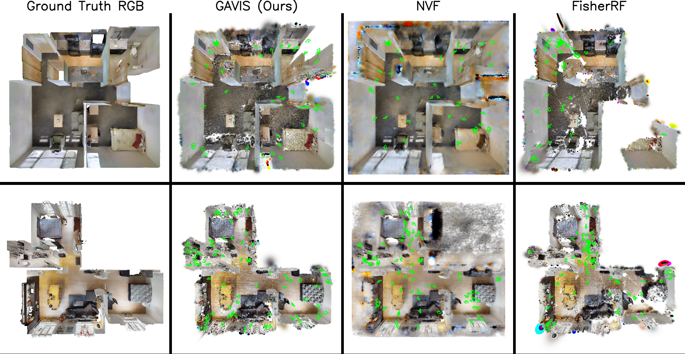
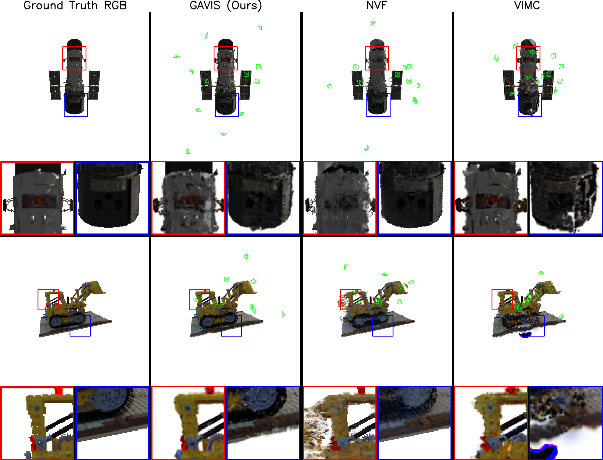
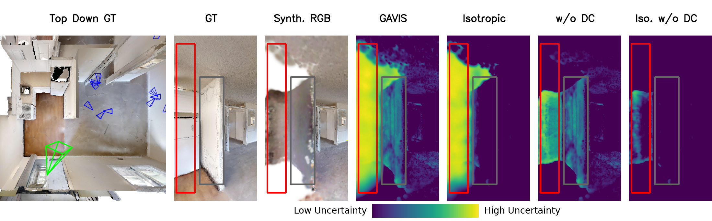

We present Gaussian Splatting Anisotropic Visibility Field (GAVIS), a novel framework for uncertainty quantification and active mapping in 3DGS. Our key insight is that regions unseen from the training views yield unreliable predictions from the 3DGS. To address this, we introduce a principled and efficient method for quantifying the visibility field in 3DGS, defined as the anisotropic visibility of each particle with respect to the training views, and represented using spherical harmonics. The resulting visibility field is integrated into a Bayesian Network–based uncertainty-aware 3DGS rasterization module, enabling real-time (200 FPS) uncertainty quantification for synthesized views. Active mapping is further performed within a maximum information gain framework building on this formulation. Extensive experiments across diverse environments demonstrate that GAVIS consistently and significantly outperforms prior approaches in both accuracy and efficiency. Moreover, beyond standalone use, our method can be applied post-hoc to improve the performance of existing approaches.

Pipeline. Given observed views, GAVIS reconstructs a 3DGS scene and constructs a per-particle anisotropic visibility field represented with spherical harmonics. The visibility field is integrated into uncertainty-aware rasterization, enabling real-time uncertainty quantification over candidate views for next-best-view selection.

Uncertainty quantification on indoor scenes. Compared to FisherRF, VIMC, and NVF, GAVIS produces uncertainty maps that closely match the ground-truth visibility, clearly distinguishing observed from unobserved regions.

Active mapping on indoor scenes (Gibson & HM3D). Top-down views of reconstructed maps after active exploration. GAVIS achieves substantially more complete scene coverage than baseline methods.

Active mapping on NeRF Synthetic. Qualitative comparison of reconstruction quality after active view selection. GAVIS recovers finer details with fewer artifacts compared to NVF and VIMC.

Ablation study. Removing either the anisotropic formulation (Isotropic) or density control (w/o DC) degrades uncertainty estimation quality, validating the importance of both components.